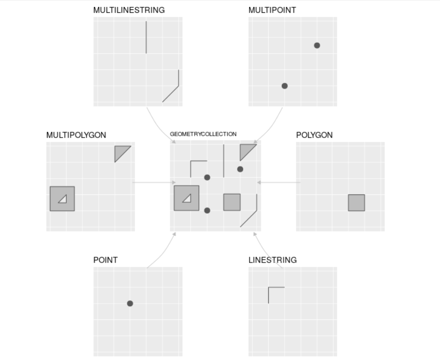
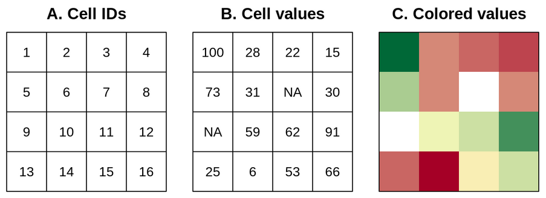
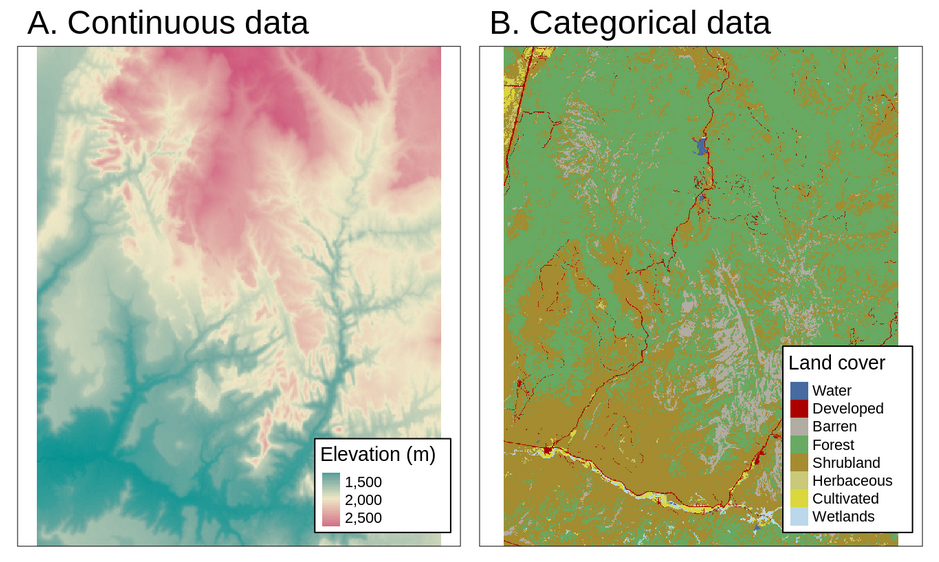
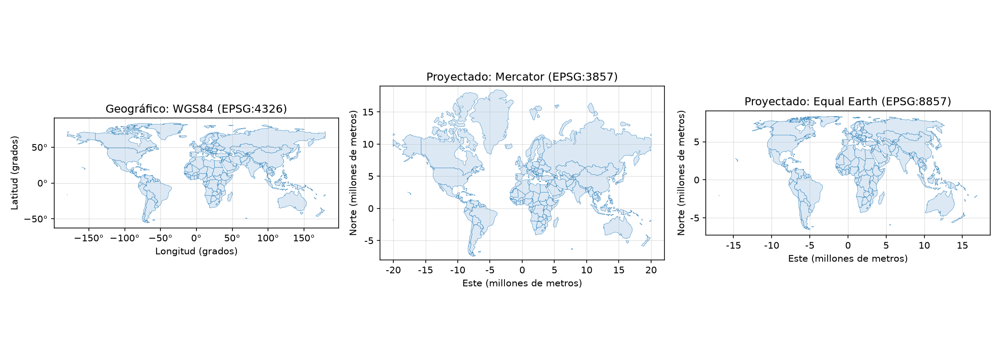

Datos geoespaciales: modelos, formatos y sistemas de referencia de coordenadas
Trabajo previo
Lecturas
Antes de la clase, revise las siguientes lecturas. El capítulo de Olaya, en español, presenta los dos modelos de datos geoespaciales; el de Lovelace et al., en inglés, es la lectura obligatoria de esta semana según el programa del curso y desarrolla los mismos conceptos con ejemplos en R, con los paquetes sf y terra que se usan en esta sección (interesan sobre todo las secciones 2.1 a 2.2, sobre datos vectoriales, y 2.4, sobre sistemas de referencia de coordenadas).
Olaya, V. (2020). Modelos para la información geográfica. En Sistemas de información geográfica (3.ª ed.). https://volaya.github.io/libro-sig/
Lovelace, R., Nowosad, J., y Münchow, J. (2025). Geographic data in R. En Geocomputation with R (2.ª ed.). Chapman and Hall/CRC. https://r.geocompx.org/spatial-class
Otros recursos
El sitio epsg.io permite buscar cualquier sistema de referencia de coordenadas por nombre o por código y ver su definición, su área de uso y sus unidades. El Sistema Nacional de Información Territorial (SNIT) publica las capas oficiales de Costa Rica, entre ellas la división territorial administrativa que se usa en esta sección.
Este capítulo está pensado como lectura previa: léalo completo antes de la sesión de la semana 10. En la clase solo se repasan sus ideas principales —los dos modelos, los sistemas de referencia de coordenadas y los formatos— en unos diez minutos; el resto de la sesión se dedica al capítulo de sf.
Introducción
Este capítulo abre la sección IV del curso, dedicada al ecosistema geoespacial de R. En las secciones anteriores, los datos del INEC se trabajaron como tablas: una fila por cantón, con su población, su área y su densidad. Lo que faltaba era la pregunta geográfica por excelencia: ¿dónde? Un dato geoespacial (o geográfico) es un dato que, además de sus atributos, tiene una ubicación sobre la superficie terrestre. Con esa ubicación, los cantones —o los países— dejan de ser filas y se vuelven polígonos en un mapa; la densidad se ve, no solo se lee; y aparecen preguntas nuevas: ¿cuáles cantones son vecinos?, ¿qué hay a menos de 10 km de un punto?, ¿en cuál país cae esta coordenada?
Para responderlas en R hace falta entender primero tres asuntos que este capítulo presenta y que el resto de la sección usa continuamente: los dos modelos con que se representan los datos geoespaciales (vectorial y raster), los sistemas de referencia de coordenadas que dan significado a los números de una ubicación y los formatos de archivo en que se guardan. El capítulo siguiente pone todo esto en práctica con el paquete sf y datos de los países del mundo, donde las consecuencias de elegir un sistema de referencia de coordenadas se ven a simple vista.
Modelos de datos
Un fenómeno geográfico puede representarse en una computadora de dos maneras. El modelo vectorial lo describe con geometrías —puntos, líneas y polígonos— definidas por las coordenadas de sus vértices; el modelo raster lo describe con una malla de celdas del mismo tamaño, cada una con un valor. La figura 1 muestra los tipos de geometrías del modelo vectorial; las figuras 2 y 3, el modelo raster.

El modelo vectorial
El modelo vectorial se basa en puntos ubicados en un sistema de referencia de coordenadas. Un punto aislado representa un objeto que, a la escala de trabajo, no tiene extensión: un aeródromo, una estación meteorológica, el registro de presencia de una especie. Una secuencia de puntos conectados forma una línea (una carretera, un río) y una línea cerrada forma un polígono (un cantón, un lago, un área protegida). Cada geometría tiene asociados atributos: el nombre del cantón, su población, la fecha del registro. Por lo general las coordenadas tienen dos dimensiones (x, y), a las que puede agregarse una tercera, z, usualmente la altitud.
Las bibliotecas y las bases de datos geoespaciales comparten una definición común de estas geometrías: el estándar Simple Features del Open Geospatial Consortium (OGC) y de la Organización Internacional de Normalización (ISO). El estándar define 18 tipos de geometrías; los siete de la figura 1 son los que se usan casi siempre. Los tipos «multi» permiten que una sola entidad tenga varias partes: el cantón de Puntarenas es un multipolígono, porque incluye islas (entre ellas la Isla del Coco, a más de 500 km de la costa), y la provincia de Limón, con un solo cuerpo, puede guardarse también como multipolígono para que toda la capa tenga el mismo tipo.
Simple Features define además una representación de las geometrías como texto, WKT (well-known text), que es la que muestran sf y otras herramientas al imprimir una geometría:
POINT (-84.0512 9.9377)
LINESTRING (-84.05 9.93, -84.04 9.94, -84.03 9.94)
POLYGON ((-84.1 9.9, -84.0 9.9, -84.0 10.0, -84.1 10.0, -84.1 9.9))En R, Simple Features está implementado en el paquete sf, cuyo nombre proviene precisamente del estándar. Las mismas definiciones están en GDAL, la biblioteca que lee y escribe los formatos de archivo geoespaciales, en GEOS, la biblioteca que implementa las operaciones geométricas, y en bases de datos como PostGIS y SpatiaLite.
El modelo raster
El modelo raster consiste en una matriz de celdas (o píxeles) del mismo tamaño y un encabezado que indica el sistema de referencia de coordenadas, el punto de origen (una esquina de la matriz) y la resolución, es decir, el tamaño de cada celda en el terreno (figura 2). Con esa información, la ubicación de cualquier celda se calcula a partir de su fila y su columna: el raster no necesita almacenar coordenadas, lo que lo hace compacto y muy eficiente de procesar mediante el álgebra de mapas.

Cada celda guarda un solo valor, numérico o categórico. Los rasters representan bien fenómenos continuos, que tienen un valor en todo punto del territorio: elevación, temperatura, precipitación, reflectancia de una imagen satelital. También pueden representar fenómenos discretos, como el tipo de cobertura de la tierra, con un código por clase (figura 3). Una imagen satelital es un raster con varias bandas, una matriz por región del espectro electromagnético.

¿Cuál modelo usar?
Depende del fenómeno y de la pregunta. Los objetos con límites definidos (cantones, carreteras, aeródromos) y los datos con muchos atributos por entidad se representan mejor como vectores: un polígono de cantón puede llevar todas las columnas del INEC. Los fenómenos continuos y las imágenes se representan mejor como rasters, y las operaciones celda a celda (restar dos elevaciones, clasificar temperaturas) son mucho más rápidas en ellos. En la práctica los análisis combinan ambos: por ejemplo, calcular la elevación promedio (raster) de cada cantón (vector). En R, el modelo vectorial lo implementa el paquete sf y el raster, el paquete terra; esta sección del curso dedica dos semanas al primero, una a los mapas interactivos con leaflet y deja terra como lectura complementaria.
Sistemas de referencia de coordenadas
Las coordenadas de un punto, (-84.0512, 9.9377), no significan nada por sí solas: hacen falta las reglas que indican qué miden esos números y respecto a qué. Esas reglas son el sistema de referencia de coordenadas (SRC; en inglés, coordinate reference system, CRS, la sigla que usan sf y la documentación). Toda capa de datos geoespaciales tiene uno, y buena parte de los errores en el trabajo geoespacial —capas que no se superponen, áreas en unidades absurdas, distancias imposibles— provienen de ignorarlo. Hay dos familias (figura 4).

SRC geográficos
Un SRC geográfico ubica los puntos sobre un modelo matemático de la Tierra, un elipsoide, mediante dos ángulos: la longitud (este-oeste, de −180° a 180°) y la latitud (norte-sur, de −90° a 90°). El más usado es WGS84 (World Geodetic System 1984): es el sistema en que los receptores GPS y los teléfonos entregan sus posiciones, en que servicios como Google Maps y OpenStreetMap reciben y muestran las coordenadas (aunque, como se verá más adelante, dibujan sus mapas en una proyección), y en que suelen distribuirse los datos globales (GBIF, Natural Earth). Costa Rica queda, aproximadamente, entre las longitudes −86° y −82,5° y las latitudes 8° y 11,2°; la Isla del Coco, cerca de −87°, 5,5°.
Las coordenadas geográficas son universales, pero tienen un inconveniente: sus unidades son grados, y un grado no mide lo mismo en todas partes. Un grado de latitud equivale a unos 111 km en cualquier lugar, pero un grado de longitud mide 111 km en el ecuador, unos 109 km en Costa Rica y cero en los polos. Por eso un mapa dibujado directamente con coordenadas geográficas se ve «estirado» lejos del ecuador, y las mediciones en grados no tienen interpretación directa.
SRC proyectados
Un SRC proyectado aplica una proyección cartográfica, una transformación matemática que lleva la superficie curva del elipsoide a un plano, y expresa las coordenadas en unidades lineales, casi siempre metros, como «este» (x) y «norte» (y). Toda proyección deforma algo (áreas, formas, distancias o direcciones), por lo que cada una se diseña para conservar una propiedad o para minimizar la deformación en una región determinada. La figura 4 lo muestra a escala mundial: la proyección de Mercator, conforme (conserva las formas y los ángulos, por lo que sirvió a la navegación), infla las áreas conforme se aleja del ecuador, hasta hacer que Groenlandia (2,2 millones de km²) parezca tan grande como Sudamérica (17,8 millones); la proyección Equal Earth (2018) conserva las áreas a costa de deformar las formas. Esa deformación dejó de ser un asunto solo técnico: el 4 de setiembre de 2026 la Asamblea General de las Naciones Unidas aprobó la resolución «Correct the map», que señala que Mercator minimiza el tamaño percibido de África, América Latina y el sur de Asia, y alienta a usar Equal Earth u otras proyecciones equivalentes cuando importe el tamaño relativo (Noticias ONU, 2026). La Web Mercator (EPSG:3857), una variante de Mercator, es la que usan los mapas web (Google Maps, OpenStreetMap, leaflet) para dibujar sus teselas: reciben las coordenadas en WGS84 y las proyectan para mostrarlas, de modo que esa deformación está en casi todos los mapas que se ven en pantalla.
Para medir en un país o una región se usan proyecciones locales, con deformaciones mínimas en su zona. El SRC oficial de Costa Rica es CR-SIRGAS / CRTM05 (EPSG:8908), que combina el datum CR-SIRGAS, vinculado al marco de referencia de las Américas (SIRGAS), con la proyección CRTM05 (Costa Rica Transversal de Mercator 2005), una transversal de Mercator centrada en el meridiano −84° que cubre todo el país con una sola zona y en la que las coordenadas van, aproximadamente, de 280 000 a 660 000 m en x y de 880 000 a 1 250 000 m en y. Sustituyó a CR05 / CRTM05 (EPSG:5367), la misma proyección sobre el datum anterior, en el que todavía están publicadas muchas capas del SNIT (las diferencias entre ambos son de centímetros, pero conviene usar y declarar el oficial). Otros SRC proyectados frecuentes son las zonas UTM (Universal Transversal de Mercator), que dividen el mundo en 60 franjas de 6° (Costa Rica cae en las zonas 16 y 17 norte).
Códigos EPSG
Para no describir un SRC con todos sus parámetros cada vez, se usan los códigos EPSG, un catálogo numérico mantenido por la International Association of Oil & Gas Producers que identifica cada sistema con un entero. La tabla 1 reúne los que se usan en el curso. Con el código, cambiar una capa de un SRC a otro —reproyectarla— es una sola instrucción en sf: st_transform(capa, 8908).
| Código EPSG | Nombre | Tipo | Unidades | Uso típico |
|---|---|---|---|---|
| 4326 | WGS84 | Geográfico | Grados | GPS, datos globales (GBIF, Natural Earth), intercambio de datos; SRC de entrada de los mapas web (leaflet) |
| 3857 | WGS84 / Pseudo-Mercator (Web Mercator) | Proyectado, conforme | Metros | Teselas de los mapas base de leaflet, Google Maps y OpenStreetMap |
| 8857 | WGS84 / Equal Earth Greenwich | Proyectado, equivalente | Metros | Mapas del mundo y medición de áreas a escala global |
| 8908 | CR-SIRGAS / CRTM05 | Proyectado, conforme | Metros | SRC oficial de Costa Rica; medición de áreas y distancias en el país; capas del curso |
| 5367 | CR05 / CRTM05 | Proyectado, conforme | Metros | SRC oficial anterior; muchas capas del SNIT siguen en él |
| 32616, 32617 | WGS84 / UTM zonas 16N y 17N | Proyectado, conforme | Metros | Datos de Costa Rica de fuentes internacionales |
Dos reglas prácticas resumen esta sección. Primera: para medir (áreas, longitudes, distancias, zonas de influencia) se usa un SRC proyectado adecuado a la región y a la magnitud: uno equivalente, como Equal Earth, para áreas a escala mundial; en Costa Rica, CR-SIRGAS / CRTM05. Segunda: para combinar capas en una operación espacial, todas deben estar en el mismo SRC; si no, se reproyectan antes. Los mapas web requieren WGS84, y leaflet se encarga de la conversión a Web Mercator para dibujarlos.
Formatos de archivo
Los datos vectoriales y raster se guardan en archivos de formatos específicos, que GDAL (y, a través de ella, sf y terra) sabe leer y escribir. La tabla 2 presenta los que aparecen en el curso.
| Formato | Modelo | Extensión | Características |
|---|---|---|---|
| GeoPackage | Vectorial (y raster) |
.gpkg
|
Estándar del OGC basado en SQLite. Un solo archivo que puede contener varias capas, sin límites de tamaño ni de nombres de columnas. El formato recomendado para guardar datos vectoriales; es el de las capas del curso (países de Natural Earth, cantones del IGN). |
| Shapefile | Vectorial |
.shp + .shx, .dbf, .prj…
|
Formato de Esri de 1990, todavía el más común. Una capa son al menos tres archivos que deben ir siempre juntos; nombres de columnas de 10 caracteres como máximo; 2 GB por archivo; una sola geometría por capa. |
| GeoJSON | Vectorial |
.geojson, .json
|
Texto en formato JSON, el mismo que entregan las API como la de GBIF. Legible, ideal para la web y para archivos pequeños; siempre en WGS84 según su especificación. |
| CSV con coordenadas | Vectorial (puntos) |
.csv
|
Una tabla con columnas de longitud y latitud (o x y y). No es un formato geoespacial: no guarda el SRC ni geometrías que no sean puntos, pero es la forma más frecuente de recibir datos de puntos (GBIF, sensores, encuestas). |
| GeoTIFF | Raster |
.tif, .tiff
|
Imagen TIFF con el SRC, el origen y la resolución en su encabezado. El formato estándar para elevación, clima e imágenes satelitales. |
Además de los archivos, los datos geoespaciales se publican mediante servicios web estandarizados por el OGC. El WFS (Web Feature Service) entrega datos vectoriales con sus atributos, como el SNIT hace con las capas del IGN; el WMS (Web Map Service) entrega mapas ya dibujados como imágenes. sf puede leer directamente una capa WFS a partir de su URL, lo que evita descargar y versionar archivos; en el curso, sin embargo, las capas se leen de archivos del repositorio, que no dependen de la disponibilidad del servicio.
Fuentes de datos
La tabla 3 reúne fuentes de datos geoespaciales abiertos útiles para la tarea 3 y el proyecto final; las dos primeras se usan en el capítulo siguiente.
| Fuente | Contenido | Acceso |
|---|---|---|
| Natural Earth | Países, ciudades, aeropuertos, ríos, lagos y relieve a escalas de 1:10 M a 1:110 M, de dominio público | Descarga de archivos vectoriales y raster; paquete rnaturalearth |
| SNIT (IGN y otras instituciones de Costa Rica) | División territorial, red vial, hidrografía, curvas de nivel, aeródromos, áreas protegidas, uso de la tierra | Visor y servicios WFS/WMS |
| INEC | Censos y estimaciones de población y vivienda por provincia, cantón y distrito | Cuadros en Excel y CSV; se unen a las capas del IGN por código o por nombre |
| Banco Mundial | Indicadores del desarrollo mundial por país y año (población, economía, salud, educación, ambiente); se unen a los países de Natural Earth por código ISO | Descarga de CSV y API REST (paquete WDI) |
| GBIF | Registros de presencia de especies (puntos) de todo el mundo | API REST (paquete rgbif, como en la semana 1) y descargas CSV |
| OpenStreetMap | Cartografía colaborativa: vías, edificios, servicios | Descargas (Geofabrik) y API Overpass (paquete osmdata) |
| WorldClim, USGS, Copernicus | Clima, elevación e imágenes satelitales (rasters) | Descarga de GeoTIFF; paquete geodata |
Resumen
- Un dato geoespacial tiene atributos y una ubicación. Se representa con el modelo vectorial (puntos, líneas y polígonos definidos por coordenadas, con atributos) o con el modelo raster (una matriz de celdas con un valor cada una, más un encabezado).
- El estándar Simple Features define las geometrías vectoriales (siete tipos usuales, incluidos los «multi») y su representación en texto WKT; en R lo implementa el paquete sf, y los rasters, el paquete terra.
- Los rasters representan bien fenómenos continuos (elevación, clima, imágenes) y los vectores, objetos con límites definidos y muchos atributos.
- Un SRC da significado a las coordenadas. Los geográficos (WGS84, EPSG:4326) usan grados y sirven para intercambiar datos y como entrada de los mapas web; los proyectados usan metros y sirven para medir, pero toda proyección deforma algo: Mercator conserva formas e infla áreas, Equal Earth (EPSG:8857) conserva áreas. El oficial de Costa Rica es CR-SIRGAS / CRTM05 (EPSG:8908), que sustituyó a CR05 / CRTM05 (EPSG:5367). Para combinar capas, todas deben estar en el mismo SRC.
- Los códigos EPSG identifican cada SRC con un número; reproyectar es
st_transform(capa, codigo). - GeoPackage es el formato recomendado para vectores; Shapefile es el más común pero tiene limitaciones; GeoJSON es texto para la web; un CSV con coordenadas es la forma usual de recibir puntos; GeoTIFF es el estándar raster. Los servicios WFS entregan capas vectoriales por la web.
Ejercicios
Los ejercicios de este capítulo son conceptuales y no requieren código. Responda en prosa, en un documento aparte o en su cuaderno de notas; se retoman en la clase.
Para cada uno de los siguientes conjuntos de datos, indique si lo representaría con el modelo vectorial o con el raster y, en el primer caso, con qué tipo de geometría: (a) las paradas de autobús de San José; (b) la temperatura promedio anual de Costa Rica; (c) los distritos del país; (d) la red de senderos de un parque nacional; (e) una imagen del satélite Sentinel-2; (f) los registros de presencia de una especie descargados de GBIF. Justifique cada elección en una oración.
Busque en epsg.io los códigos 4326, 3857, 8908 y 5367 y anote, para cada uno, el nombre, el tipo (geográfico o proyectado), las unidades y el área de uso. Luego busque el SRC «Costa Rica Lambert Norte» (usado en la cartografía anterior a CRTM05) y anote su código.
Escriba en WKT (a) un punto con las coordenadas geográficas de la Escuela de Geografía de la UCR, que puede obtener de Google Maps u OpenStreetMap (recuerde el orden: longitud y luego latitud), y (b) un polígono rectangular que encierre aproximadamente el campus Rodrigo Facio. Verifique el polígono dibujándolo en geojson.io o en wktmap.com.
Entre al visor del SNIT y ubique la capa de la división territorial administrativa (límite cantonal) del IGN. Anote el SRC en que se publica y la escala. Si la capa está disponible como servicio WFS, copie la URL del servicio. Si su tema es de otro país, haga lo mismo con el portal de datos geoespaciales de ese país (o con GADM, que publica la división administrativa de todos los países).
Explique (a) por qué en un mapa web, dibujado en Web Mercator, Groenlandia parece más grande que Brasil, cuando en realidad es cuatro veces más pequeña, y qué SRC convendría usar para comparar las áreas de los países del mundo; y (b) por qué CR-SIRGAS / CRTM05, que es el SRC adecuado para medir en Costa Rica, no lo es para medir en México.
Para el tema de sus tareas, identifique en la tabla 3 (o fuera de ella) una fuente de datos geoespaciales relacionada: una capa del SNIT, un CSV con coordenadas, un GeoJSON, registros de GBIF u otra. Anote el formato, el SRC (si la fuente lo indica) y el tipo de geometría. Se usará en los ejercicios del capítulo siguiente y en la tarea 3.
Referencias bibliográficas
Lovelace, R., Nowosad, J., y Münchow, J. (2019). Geocomputation with R. CRC Press. https://geocompr.robinlovelace.net/
Lovelace, R., Nowosad, J., y Münchow, J. (2025). Geographic data in R. En Geocomputation with R (2.ª ed.). Chapman and Hall/CRC. https://r.geocompx.org/spatial-class
MapTiler. (s. f.). epsg.io: Coordinate systems worldwide. Recuperado el 11 de octubre de 2026, de https://epsg.io/
Natural Earth. (s. f.). Natural Earth: Free vector and raster map data [conjunto de datos]. Recuperado el 11 de octubre de 2026, de https://www.naturalearthdata.com/
Noticias ONU. (2026, 4 de setiembre). UN tells the world: Stop making Africa look small. Naciones Unidas. https://news.un.org/en/story/2026/09/1168284
Olaya, V. (2020). Sistemas de información geográfica (3.ª ed.). https://volaya.github.io/libro-sig/
Open Geospatial Consortium. (2011). OpenGIS implementation standard for geographic information: Simple feature access. Part 1: Common architecture (OGC 06-103r4). https://www.ogc.org/standards/sfa